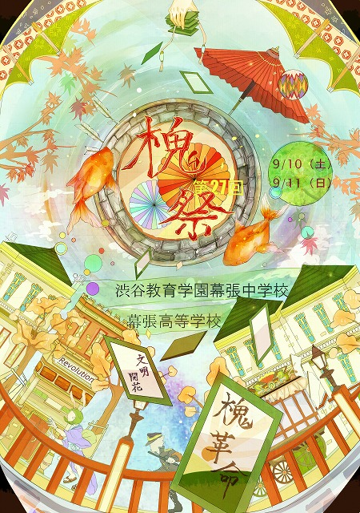

槐祭特設ページ |
|
|  |
公開中！
こちらのページにて。（2011年9月11日更新）
・9月10日(土)午前9時 - 午後3時
・9月11日(日)午前9時 - 午後3時 ※一般の方向けの公開は日曜日のみとなります ・当日は受付にてパンフレットをお渡ししていますが、一家庭一冊とさせていただきます。 ・飲食及び休憩場所をカフェテリアに用意させていただきます。どうぞご利用ください。 ・団体の公演時間は、インフォメーションセンター（生徒玄関奥）にて係生徒がご案内する予定です。 ・槐祭では、一般の来場者や保護者の方で上履きをお持ちでない方に靴カバーをお渡ししています。これらの使用済み靴カバーは、回収後すべて廃棄しております。毎年靴カバーのゴミが大量に出ることには心を痛めております。こうしたゴミを少しでも減らすため、ご来校の際は上履きをご持参いただきますようお願い申し上げます。 ・本校には駐車スペースがないため、お車でのご来校はご遠慮いただくようお願いしております。しかしながら、毎年、近隣での路上駐車や大規模店舗への駐車が多く、周辺地域の方々に多大なご迷惑をおかけしております。近隣からの申し入れもございますので、公共交通機関をご利用のうえ、ご来校下さるようお願い申し上げます。 ※詳しくはこちら ・海浜幕張駅徒歩15分、JR幕張駅徒歩25分、京成幕張駅徒歩20分 |
|
更新：2011/09/10 作成：コンピュータ同好会
|
|